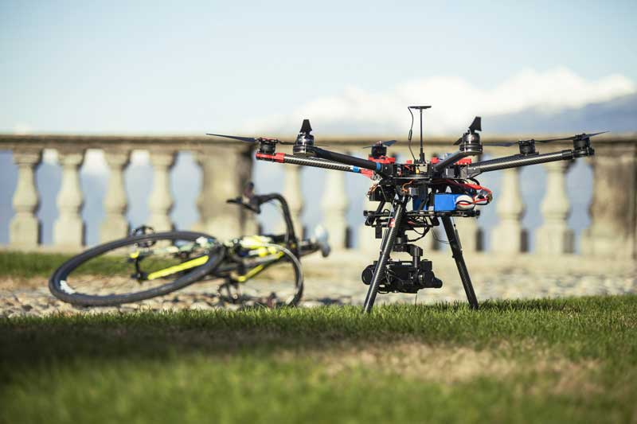

STEM programs must have drone components to them in order to be competitive in the future. Drone technology encompasses all aspects of science, technology, engineering and math. The education of UAVs will continue to increase despite the concerns of costs and accidents. STEM programs recognize the importance of drone technology and will continue to support these programs in high schools, preparing them for college.
EDUCATIONAL
Drones, a term that, until recently, was not a part of the American vernacular, is now a subject taught in some universities and even some high schools. Drone technology and related jobs fall under the canopy of STEM fields. These are the fastest growing jobs in the world, resulting in significant demand for people with this expertise. High schools and universities are responding by building curriculums to fill the need.

GRADUATE DEGREE PROGRAMS
Graduate degree programs are now being offered in colleges. The increased importance of drones is driving schools to compete by offering classes and even majors in this field. This trend is only going to continue, and technical colleges that do not institute unmanned aerial vehicle programs will lag behind, unable to attract advancing students.

CASE STUDY: UNIVERSITY OF NORTH DAKOTA
The first school to offer an unmanned aerial vehicle system was University of North Dakota in 2009. Students in this field work on developing software, design and modeling of drones, and simulate UAV applications in real world scenarios.
LEARN MOREK-12 STEM + DRONES PROGRAM
In K-12 school systems, the application of learning through drones is made available by STEM centers. It offers a reachable employment of drones that students in college might not receive until their third or fourth year. Students who are pre-exposed to drone technology are ahead of the curve for colleges.
CASE STUDY: GREENON HIGH SCHOOL
Greenon High School was one the first high schools to offer the course in unmanned aerial vehicles with support from their regional STEM center. Classes immerse the students into the new technology along with discussing the issues and advancements. Students who go through the program are well prepared for a multitude of related careers and the growing demand of this expertise.
LEARN MORE
HIGH COSTS
Educational drones cost anywhere from $500-$3,000 making it an expensive investment. Technologically advanced drones can cost $3500 and more. Concerns arise on whether or not the benefits outweigh the high costs. The uses in schools that include aerial views for sports and marching band carry little weight.
SOLUTION: GRANT PROGRAMS
On its own, a high school or college might not be able to fund this expensive endeavor, but there are grant programs through organizations like STEM and the National Science Foundation that help alleviate the costs.
INDUSTRIES AND DAMAGE
Operating the drone is a part of the learning process, and therefore, crashes are inevitable. Injuries and damage done to the surrounding land may spark liability problems. There is also a financial burden to repair or replace a drone along with paying for the injuries resulting from an accident.
SOLUTION: IMPROVED TECHNOLOGY
Improving technology makes problems like personal injuries and property damage less probable. Similar to the technology that is now in cars, sensors can be installed on drones and programmed to avoid collisions.

THE UNION OF STEM + DRONES
STUDENTS CAN PILOT + DESIGN
As the cost of drone technology is reduced over time due to higher production, more schools will offer programs, making it more accessible to students across the nation. Students will no longer consider how to make a drone work; rather, improvements to a now existing technology. Students who pilot and design drones are advancing along with the $82 Billion industry that it will be by 2025.